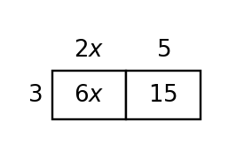

Mathematical idea: Equivalent expressions can look different while representing the same quantity for every input.
Today you will identify parts of expressions, combine like terms, distribute, and rewrite expressions to reveal useful structure. You will also compare equivalent forms and explain what each form shows.
Learning Target: Students will interpret and rewrite algebraic expressions by identifying structure, meaning, and equivalent forms.
I can statements
This is a long-range preview for future lessons. Do not solve it today. Instead, annotate it individually. Circle anything familiar, underline symbols or directions that seem important, and write notes about what information you think will be needed later.
As you annotate, ask yourself: What parts (words, symbols, graphs) do you KNOW? What parts look FAMILIAR? What parts look like jibberish?
Create a real context that can be represented by both $8x+20$ and $4(2x+5)$. Then explain what each form reveals about the situation and give one input-output check that confirms equivalence.
Directions
Read the introduction aloud with a partner or in a small group. As you read, annotate the text by highlighting important ideas, circling key vocabulary, and writing short notes about connections, questions, or predictions in the margins.
Algebraic expressions use numbers, variables, operations, and grouping. In an expression like $5x+12$, the coefficient of $x$ is 5 because it tells how many groups of $x$ are being counted. The constant 12 is a fixed amount that does not change with $x$.
Two expressions can look different but still give the same output for every input. That happens when properties of operations, such as distribution or combining like terms, preserve the value. Substitution can check equivalence for a specific input, but structure explains why the equivalence always works.
Grouping shows repeated structure that might be hidden in a longer expression. If two terms both contain $(x+3)$, you can treat that group as a shared factor. This makes rewriting faster and can reveal meaning in a context.
Key representations in this section include algebraic expressions, equivalent forms, grouped terms and factors, context meanings for terms, and substitution checks. Each representation helps you see a different part of the same algebraic structure.
When a context describes cost, perimeter, or repeated quantities, the expression should match the story. Rewriting can reveal total groups, parts of a whole, or a simplified form that is easier to calculate.
Stop and Discuss
Expression structure begins by naming the parts that are being added or subtracted.
A piece of an expression separated by addition or subtraction.
The number multiplying a variable, such as 5 in $5x$.
A number with no variable, such as 12 in $5x+12$.
Terms with the same variable part, such as $2x$ and $7x$.
Example: In $4x^2+6x+3x+9$, the like terms $6x$ and $3x$ can combine to $9x$.
Consider the expression $7x+18$.
Consider the expression $9x+4$.
Stop and Discuss
Combine only terms with the same variable part. Coefficients can add, but exponents and variables do not change.
| Expression | Like-term groups | Simplified form |
|---|---|---|
| $2x+5x+4+9$ | $2x+5x$ and $4+9$ | $7x+13$ |
| $3a^2+2a+a^2+7a$ | $3a^2+a^2$ and $2a+7a$ | $4a^2+9a$ |
Context: Like terms count the same kind of quantity, such as combining two groups of notebooks but not notebooks with fixed fees.
Simplify the expression by grouping like terms.
Simplify by combining like terms.
Stop and Discuss
Distribution multiplies each part inside a group by the factor outside the group.
For $3(2x+5)$, multiply $3$ by both terms: $$3(2x+5)=3(2x)+3(5)=6x+15.$$

Context: If 3 teams each buy $2x+5$ items, the equivalent form $6x+15$ shows the total variable items and total fixed items.
Rewrite $5(3x+2)+4x$ in an equivalent simplified form.
Rewrite $4(2x+6)+3x$ in an equivalent simplified form.
Stop and Discuss
When the same group appears in more than one term, you can combine the outside factors or distribute first.
For $4(x+3)+2(x+3)$, the shared group is $(x+3)$:
$$4(x+3)+2(x+3)=(4+2)(x+3)=6(x+3)=6x+18.$$| Form | What the form reveals |
|---|---|
| $4(x+3)+2(x+3)$ | two separate groups |
| $6(x+3)$ | six total copies of the same group |
| $6x+18$ | combined variable and constant parts |
Analyze the expression $3(x+5)+7(x+5)$.
Analyze $5(x+2)+4(x+2)$.
Stop and Discuss
Expressions have structure: terms, coefficients, constants, factors, and groups all communicate meaning. Rewriting an expression should preserve the same value.
Combining like terms, distributing, factoring a repeated group, and substitution checks are tools for working with equivalent forms. Each form can reveal a different feature.
A common error is combining terms that are not like terms or distributing to only one term inside parentheses.
Strong understanding means you can rewrite accurately, explain why the forms are equivalent, and connect parts of an expression to a context.
Look back at the future task. Do not solve it yet. Highlight one part that makes more sense now than it did at the beginning. Circle one part that still feels unfamiliar. Write one sentence about what representation you would look at first.
In $5x+12$, identify the coefficient of $x$.
Simplify by combining like terms: $2x+3x+3+4x^2+10+x$.
What is one idea about expressions and structure you understand better now than at the start of class? Write at least one complete sentence.
What is one thing about expressions and structure you still want to understand or practice? Be specific — name the idea, not just "everything."